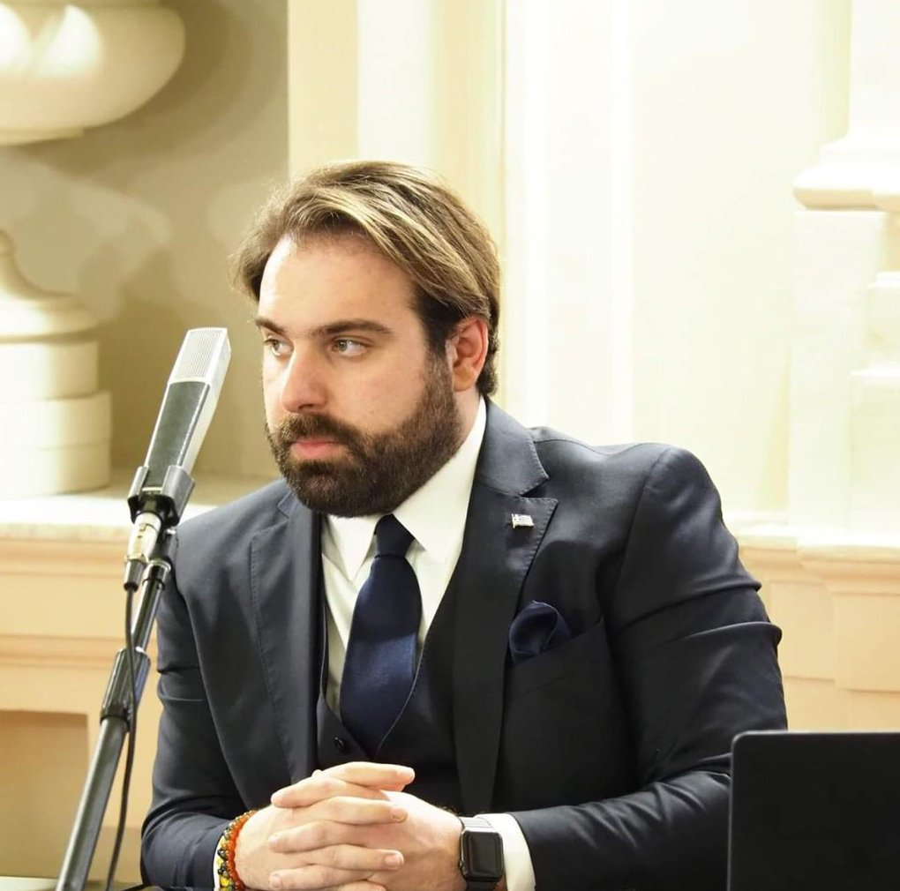
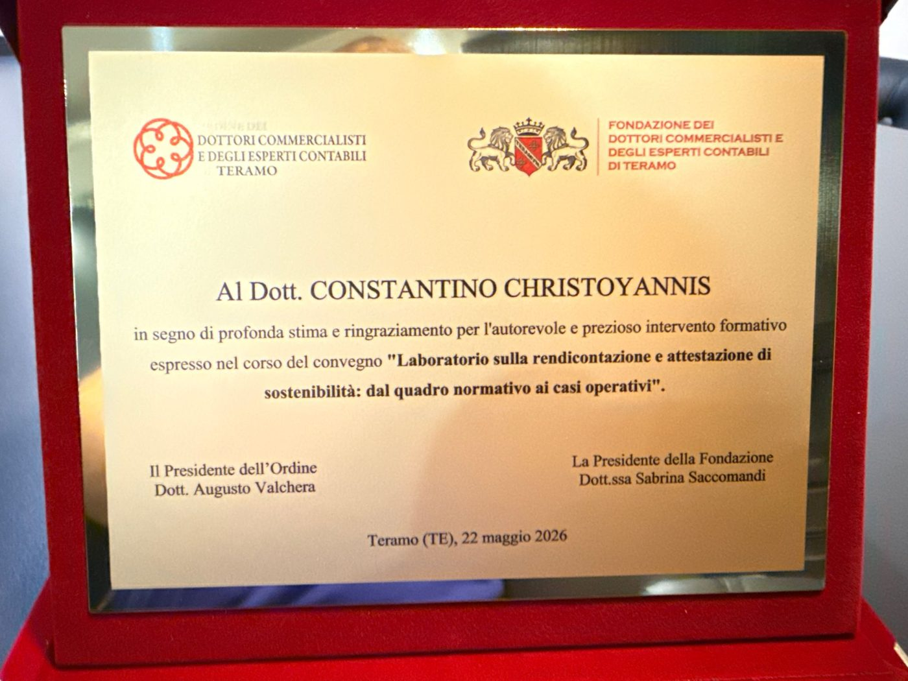

CreditoCredit
€32 mld€32 bnfinanza sostenibile erogata da Deutsche Bank nel terzo trimestre
sustainable finance from Deutsche Bank in Q3
▲ +42% sul trimestre▲ +42% q/q
ESG Today, 28.10.2026 ↗Visione + Misurazione + Dato + Valore = ESGVision + Measurement + Data + Value = ESG
Aiuto imprese e investitori a trasformare l'ESG da obbligo a opportunità di crescita misurabile: accesso al credito, clienti, filiere.
I help companies and investors turn ESG from an obligation into measurable growth: access to credit, clients, supply chains.

Termometro ESGESG thermometer
I numeri che seguo per capire lo stato di salute dell'ESG: credito, rischio, imprese, fondi.
The figures I track to read the health of ESG: credit, risk, companies, funding.
Aggiornata alUpdated
CreditoCredit
€32 mld€32 bnfinanza sostenibile erogata da Deutsche Bank nel terzo trimestre
sustainable finance from Deutsche Bank in Q3
▲ +42% sul trimestre▲ +42% q/q
ESG Today, 28.10.2026 ↗CreditoCredit
20262026le banche valutano i rischi ESG nel credito; le banche più piccole entro gennaio 2027
banks assess ESG risk in lending; smaller banks by January 2027
Linee guida EBAEBA guidelines
EBA ↗RischioRisk
36,6%36.6%delle PMI italiane è ad alto rischio climatico fisico
of Italian SMEs face high physical climate risk
Italia paese UE più colpitoItaly hardest hit in the EU
ESG News, 23.10.2026 ↗ImpreseCompanies
91%91%delle imprese che vedono la transizione come opportunità non ha un piano concreto
of companies that see the transition as an opportunity have no concrete plan
Il divario da colmareThe gap to close
ESG News, 23.10.2026 ↗FondiFunding
€30 mld€30 bndi fondi BEI per l'adattamento climatico entro il 2030, anche per le imprese più piccole
in EIB funding for climate adaptation by 2030, including smaller firms
▲ Raddoppiati▲ Doubled
ESG News, 23.10.2026 ↗ValoreValue
+13%+13%di fatturato stimato per le società benefit rispetto a imprese simili
estimated revenue for benefit corporations versus similar firms
▲ Lo scopo paga▲ Purpose pays
ESG News, 27.10.2026 ↗Chi sonoAbout
L'ESG non è solo un costo o un obbligo di conformità: è efficienza dei processi, accesso al credito e crescita dei ricavi. Il mio lavoro è dimostrarlo con i numeri.
ESG is not just a cost or a compliance obligation: it means more efficient processes, better access to credit and revenue growth. My job is to prove it with numbers.
Formazione da giurista ed economista: MBA all'Imperial College, LUISS, Università di Perugia. Già docente di Metrics of Sustainable Impact (NABA).
Trained in law and economics: MBA from Imperial College, LUISS, University of Perugia. Former lecturer in Sustainable Impact Metrics (NABA).
Le basi
Foundations
Ho iniziato dal diritto e dalle istituzioni: come nascono le regole, come si costruisce un rapporto tra amministrazioni, imprese e comunità.
I started with law and institutions: how rules are made, and how relationships between public bodies, companies and communities are built.
La governance dall'interno
Governance from the inside
Sedere in un consiglio di amministrazione mi ha insegnato che la sostenibilità si decide lì: rischi, investimenti, rapporti con investitori e territorio.
Sitting on a board taught me that sustainability is decided there: risks, investments, relations with investors and the local area.
Dove nasce la consulenza ESG
Where my ESG advisory began
Qui ho imparato il mestiere. Ho accompagnato le imprese nei bilanci di sostenibilità, nei report integrati e nelle DNF secondo GRI, <IR> Framework e SASB.
This is where I learned the craft. I supported companies on sustainability reports, integrated reports and non-financial statements under GRI, the <IR> Framework and SASB.
La scala
Scale
Ho guidato incarichi di rendicontazione e assurance di sostenibilità per gruppi italiani e internazionali, coordinando un team di circa 30 persone, e sono stato vice coordinatore dei GHG Champions.
I led sustainability reporting and assurance engagements for Italian and international groups, managing a team of about 30 people, and served as Vice Coordinator of the GHG Champions.
Oggi
Today
Come Advisory & Strategic Growth Director porto questa esperienza a imprese e investitori, e sono l'interlocutore del loro top management, delle banche e degli investitori sui temi di sostenibilità.
As Advisory & Strategic Growth Director I bring this experience to companies and investors, as the counterpart for their top management, banks and investors on sustainability.

«In segno di profonda stima e ringraziamento per l'autorevole e prezioso intervento formativo»
"In deep esteem and gratitude for an authoritative and valuable training contribution"
Ordine e Fondazione dei Dottori Commercialisti di Teramo, «Laboratorio sulla rendicontazione e attestazione di sostenibilità», 22 maggio 2026Teramo Order and Foundation of Chartered Accountants, workshop on sustainability reporting and assurance, 22 May 2026
Advisory
Per PMI, mid-cap e investitori. Dalla strategia ai dati che chiedono banche, clienti e norme.
For SMEs, mid-caps and investors. From strategy to the data that banks, clients and regulators ask for.
Un piano ESG legato al business, da presentare a banche, investitori e grandi clienti.
An ESG plan tied to the business, ready for banks, investors and large clients.
Report di sostenibilità solidi, obbligatori o volontari, che reggono la verifica.
Robust sustainability reports, mandatory or voluntary, that stand up to review.
Rispondere ai requisiti ESG dei grandi clienti, o chiederli bene ai propri fornitori.
Meeting large clients' ESG requirements, or asking your own suppliers the right questions.
Dal costo all'investimento: metriche che un CFO può portare in consiglio.
From cost to investment: metrics a CFO can take to the board.
Oggi svolgo questa attività in Tecno Group, come Advisory & Strategic Growth Director.
I currently do this work at Tecno Group, as Advisory & Strategic Growth Director.
Pillole ESGESG notes
Due volte a settimana su LinkedIn. Qui le ultime tre.
Twice a week on LinkedIn. The latest three are here.
1,5°C, 2°C e 3°C sono lo scenario su cui pianificare, non obiettivi. Intanto il 91% delle imprese non ha un piano concreto.
1.5°C, 2°C and 3°C are the planning baseline, not targets. Meanwhile 91% of companies have no concrete plan.
Leggi su LinkedInRead on LinkedIn ↗Ralph Lauren toglie la sostenibilità dai bonus, Hyundai la porta nella filiera. Integrare vuol dire continuare a misurare.
Ralph Lauren drops sustainability from bonuses, Hyundai takes it into its supply chain. Embedding means you keep measuring.
Leggi su LinkedInRead on LinkedIn ↗Più credito ESG e stress test climatici dal 2027: serve una metodologia comune per non far compilare alle PMI tre questionari uguali.
More ESG credit and climate stress tests from 2027: a common method would spare SMEs filling in the same questionnaire three times.
Leggi su LinkedInRead on LinkedIn ↗Pubblicazioni e interventiPublications and talks
ContattiContact
Rispondo entro due giorni lavorativi.
I reply within two working days.
c.christoyannis@gmail.com
Progetti, ricerca, tavoli di lavoro, articoli. Scrivimi di cosa si tratta.
Projects, research, working groups, articles. Tell me what you have in mind.
Convegni, seminari con crediti formativi, workshop. Indicami data, platea e tema.
Conferences, accredited seminars, workshops. Send me the date, audience and topic.
Constantino Christoyannis è Advisory & Strategic Growth Director di Tecno Group. Aiuta imprese e investitori a trasformare l'ESG da obbligo a opportunità di crescita misurabile. Ha lavorato come avvocato e poi in Grant Thornton e KPMG, dove ha guidato incarichi di rendicontazione e assurance di sostenibilità. Ha insegnato Metrics of Sustainable Impact ed è relatore e formatore per MEF, ABI, ordini dei commercialisti e Unindustria.
Constantino Christoyannis is Advisory & Strategic Growth Director at Tecno Group. He helps companies and investors turn ESG from an obligation into measurable growth. He worked as a lawyer and then at Grant Thornton and KPMG, where he led sustainability reporting and assurance engagements. He has taught Sustainable Impact Metrics and speaks and trains for MEF, ABI, chartered accountants' orders and Unindustria.